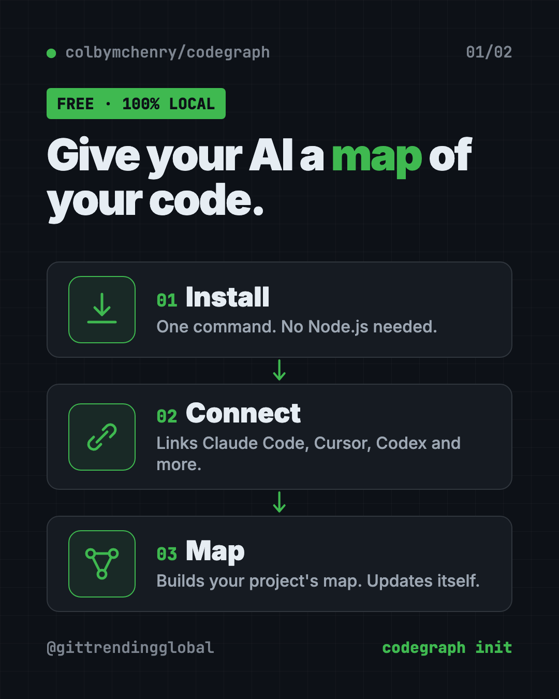
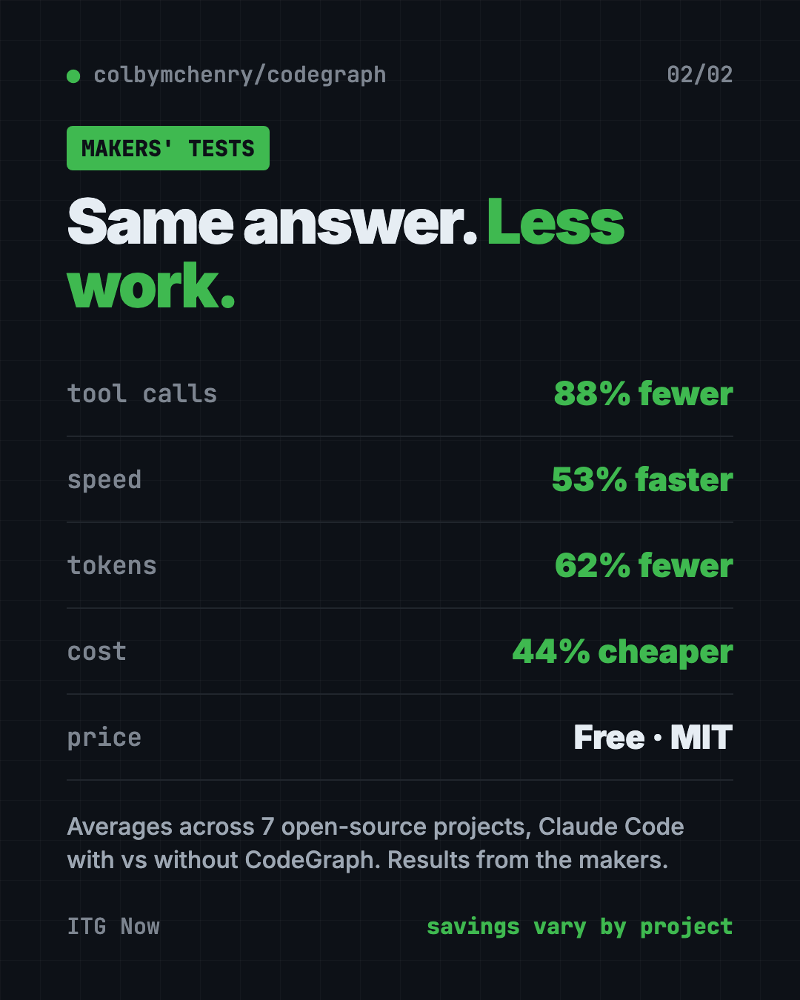

CodeGraph for Claude Code: Cut AI Coding Costs (2026)
CodeGraph for Claude Code builds a local map of your code, so your AI helper finds the right files in one step. Free, MIT licensed, runs on your computer.
CodeGraph for Claude Code is a free tool that builds a map of your project ahead of time. Your AI coding helper asks the map instead of opening files one by one, so it answers faster and spends less.
It also works with Cursor, Codex, Gemini, GitHub Copilot and more. Below you'll find what it does, real ways to use it, the exact install steps, and a prompt that lets your AI helper set it up for you.
Key takeaways
- Free and open source. MIT license, about 74.2K stars on GitHub.
- Fewer steps for your AI. In the makers' own tests, Claude Code used 88% fewer tool calls and cost 44% less on average.
- 100% local. The README says no data leaves your machine and no API keys are needed.
- Keeps itself fresh. It updates the map every time a file changes. Nothing to re-run.
- One catch: in long chats it can leave more text in the AI's short-term memory.
What is CodeGraph?
Think of your code as a big warehouse. Every box is a piece of code. Some boxes depend on others.
When you ask an AI coding helper a question, it usually has to walk the aisles. It searches, lists folders, and opens file after file. That costs time, and it costs tokens. Tokens are the small chunks of text an AI reads and writes, and they are what you pay for.
CodeGraph labels the whole warehouse first. It records every function, every call, and every link between pieces. The makers call this a "pre-indexed code knowledge graph." That's a fancy name for a map of who talks to whom.
Then, when your AI needs something, it asks the map once. It gets the right code back, plus how it connects to other parts, plus what a change might break.
It's made by developer Colby McHenry and shared on GitHub.

How does CodeGraph save money on AI coding?
The makers tested it on seven real open-source projects in seven languages. Each test asked Claude Code (running Claude Opus 4.8) one big question about the project, with and without CodeGraph. They ran each one four times and took the middle result.
Their reported averages:
- 88% fewer tool calls. A tool call is one action, like a search or opening a file.
- 53% faster answers.
- 62% fewer tokens read and written.
- 44% cheaper per answer.
- Zero file reads with CodeGraph, on all seven projects.
The savings were not the same everywhere. On the VS Code project, the answer was 71% cheaper. On a small Go project called Gin, the cost was about even. The README explains why: the more digging a question needs, the more you save.
💡 Tip: CodeGraph helps most on big, messy projects where your AI keeps saying "let me search for that." On a tiny project, you may barely notice it.
How to use CodeGraph (real examples)
You don't talk to CodeGraph directly. You keep using your AI helper as normal, and it quietly asks the map. Here's what that looks like day to day:
- Ask how something works. "How does checkout talk to the payment code?" Your AI pulls the exact path through the code in one go.
- Check before you change. "If I rename this function, what breaks?" CodeGraph's impact check shows everything that calls it.
- Join a new project. On your first week, ask your AI to explain the main parts. It reads the map, not 40 random files.
- Fix a bug faster. Paste an error and ask where it comes from. The AI follows the calls instead of guessing.
- Find a web page's code. It links web addresses to the code that handles them, across 17 popular web frameworks.
It understands more than 20 programming languages. That includes Python, JavaScript, TypeScript, Java, Go, Rust, Swift, C#, PHP and Ruby, plus older ones like COBOL.
Which AI tools does CodeGraph work with?
The installer finds and sets up these for you:
- Claude Code
- Cursor
- Codex CLI
- opencode
- Hermes Agent
- Gemini CLI
- Antigravity IDE
- Kiro
- GitHub Copilot (in VS Code, Copilot CLI and JetBrains apps)
It connects through MCP, short for Model Context Protocol. That's a standard plug that lets AI helpers use outside tools.
How to install CodeGraph for Claude Code and other AI tools
These are the steps from the README. You need a Mac, Windows or Linux computer and at least one AI coding tool. You don't need Node.js, because CodeGraph brings its own.
Step 1: install the tool. Open Terminal (Mac or Linux). Copy and paste this:
curl -fsSL https://raw.githubusercontent.com/colbymchenry/codegraph/main/install.sh | sh
On Windows, open PowerShell. Copy and paste this:
irm https://raw.githubusercontent.com/colbymchenry/codegraph/main/install.ps1 | iex
Already have Node.js? You can use this instead:
npm i -g @colbymchenry/codegraph
Step 2: open a new terminal window. The README says the installer doesn't change the window you already have open.
Step 3: connect your AI helpers. Copy and paste this:
codegraph install
This is the step that links CodeGraph to your AI tools. It does not build any maps yet.
Step 4: build the map for each project. Go into your project folder and run this:
cd your-project
codegraph init
That's it. From now on the map updates itself when files change. Restart your AI tool so it picks up the new connection.
⚠️ Heads up: The first map can take a while on a huge project. The makers say the Linux kernel, with 70,000 files, finishes in under 12 minutes on a small 2-core server. After that, saving a file updates the map in well under a second.
To update later, run codegraph upgrade. To remove it from every AI tool, run codegraph uninstall.
Let Claude or Codex set it up for you
Claude Code and OpenAI Codex are AI helpers that can run setup steps on your computer. You paste a request, it does the steps, and you approve each one.
Copy and paste this:
Please help me install CodeGraph from github.com/colbymchenry/codegraph.
1. Check if I'm on Mac, Windows or Linux.
2. Run the official one-line installer for my system. Explain it first.
3. Tell me to open a new terminal, then run "codegraph install".
4. Go into my current project folder and run "codegraph init".
5. Tell me how to check that my AI tool can now see CodeGraph.
Then try asking:
Use CodeGraph to explain how the main parts of this project connect.
If I change the function I'm working on, what else could break? Use CodeGraph's impact check.
Turn off CodeGraph's anonymous usage stats for me and confirm it worked.

Is CodeGraph free and private?
Yes, the tool is free under the MIT license. You can use it at work too.
The README says it runs 100% on your computer. It stores the map in a small local database inside your project, in a folder called .codegraph. No API keys, no outside services.
There is one small thing to know. CodeGraph collects anonymous usage counts, like which commands and languages get used. The makers say they never collect code, file names, searches or IP addresses. The installer asks you first, and this turns it off:
codegraph telemetry off
The makers are also building a separate paid hosted product, with a waitlist at getcodegraph.com. The free tool works fine without it.
CodeGraph at a glance
| Price | Free |
| Works offline | Yes, the map lives on your computer |
| Platforms | Mac, Windows, Linux (Intel and ARM) |
| License | MIT (open source) |
| GitHub stars | About 74.2K |
| Languages | 20+ programming languages |
| Best for | Anyone who pays for AI coding help on medium or big projects |
Our take
CodeGraph does one clear job: stop your AI from wandering around your code. The install is four short steps, and the map keeps itself current.
What we like:
- The makers publish their test method and per-project numbers, not just a headline.
- They're honest about where it doesn't help much.
- Runs locally, so your code stays yours.
- Works with almost every popular AI coding tool.
- One command to remove it cleanly.
What to watch for:
- The README admits a real trade-off. In long sessions, CodeGraph leaves about 80% more text sitting in the AI's working memory (its context window).
- All the savings numbers come from the makers' own tests.
- Anonymous stats are on unless you say no.
- If you don't use an AI coding helper, there's nothing here for you yet.
Want more ways to trim your AI bill? See Graphify, which gives your AI a map of your whole project, RTK, which shrinks what your AI has to read, or Caveman, which cuts Claude Code token use. For a visual tour of a codebase, try Understand Anything.
FAQ
Is CodeGraph free?
Yes. CodeGraph is free and open source under the MIT license. A separate hosted product is coming, but the tool itself costs nothing.
Does CodeGraph send my code anywhere?
No. The README says it runs 100% locally with no API keys or outside services. It only sends anonymous usage counts, and you can turn that off.
Does CodeGraph work with Cursor and Codex, not just Claude Code?
Yes. The installer sets up Claude Code, Cursor, Codex CLI, Gemini CLI, GitHub Copilot, Kiro and a few others.
How much can CodeGraph reduce Claude Code token usage?
In the makers' tests on seven projects, it used 62% fewer tokens on average. Results ranged from big savings on large projects to about even on small ones.
Do I need to rebuild the map after I change code?
No. CodeGraph watches your project and updates the map every time a file changes.
Get CodeGraph: github.com/colbymchenry/codegraph
Follow @gittrendingglobal on Instagram for one free, useful tool every day.
📲 Watch the 30-second video on Instagram
Keep reading

DBX: Free Database Client for 100+ Databases, With AI (2026)
DBX is a free database client that opens 100+ kinds of databases in a 25 MB app. Its AI helper turns plain English into database queries for you.

PureMac: Free CleanMyMac Alternative, No Subscription
PureMac is a free CleanMyMac alternative. It clears junk, fully uninstalls apps and finds duplicates, with no subscription, no tracking and no scare tactics.

Strata: Run Big Local AI on a Gaming PC, Free
Strata is a free installer that runs big, private local AI on a gaming PC. It sets up a large Qwen model, so your chats never leave your computer.